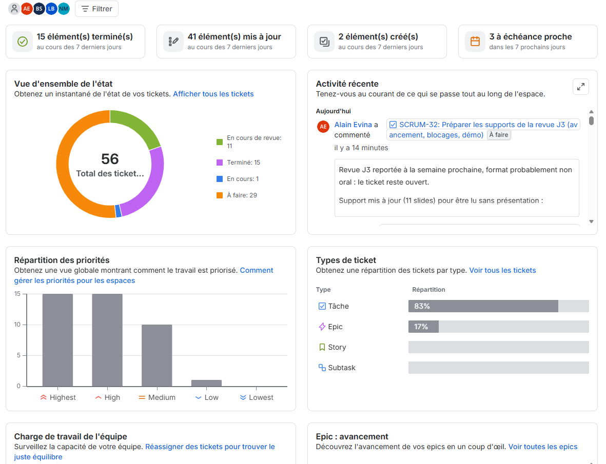

Volet A
Le guetteur
« Ce bloc est-il normal ? »
- Un BiLSTM entraîné par nous, exporté en ONNX
- Il tourne dans le navigateur, sans serveur
- Site statique, coût nul (GitHub Pages)
- Rapide, léger, entièrement maîtrisé
NLP 2 · M2 Data & IA — revue d'avancement J3
Repérer les blocs qui tournent mal, puis expliquer pourquoi : deux approches, une même équipe.
HDFS.log — un bloc, quatre lignes
081110 010451 33 INFO dfs.FSNamesystem: BLOCK* NameSystem.allocateBlock: /user/root/randtxt/_temporary/_task_200811092030_0003_m_000269_0/part-00269. blk_-1013481023655112960081110 010451 5105 INFO dfs.DataNode$DataXceiver: Receiving block blk_-1013481023655112960 src: /10.251.74.134:45275 dest: /10.251.74.134:50010081110 010451 5109 INFO dfs.DataNode$DataXceiver: Receiving block blk_-1013481023655112960 src: /10.251.74.134:48604 dest: /10.251.74.134:50010081110 010454 5105 INFO dfs.DataNode$DataXceiver: writeBlock blk_-1013481023655112960 received exception java.io.IOException: Could not read from streamlà, ça casse.
mais pourquoi ?
Le point de départ
Un label « anomalie » dit qu'il y a un problème… jamais pourquoi.
C'est toute la raison d'être du volet B.
Notre réponse
Volet A
« Ce bloc est-il normal ? »
Volet B
« Que s'est-il passé, et sur quoi je m'appuie ? »
Sept contrats d'échange (C1 à C7) fixent ce que chaque partie transmet aux autres : traces, vocabulaire, modèle, découpage, réponses, passages, évaluations.
Qui fait quoi
Les données
Découpage stratifié (seed 42) : chaque partie garde 2,93 % d'anomalies. Tous les modèles de l'équipe utilisent exactement le même.
Seulement 18 373 séquences distinctes !
Beaucoup de blocs se ressemblent. On donne donc toujours deux scores : sur tout l'ensemble, et sur les séquences jamais vues, qui mesurent la vraie généralisation.
Aucun réglage, seuil ou exemple n'en est tiré : la règle est vérifiée automatiquement à chaque pull request.
Volet A · premiers résultats
meilleure généralisation
4,5× moins
le prix à payer
Mesures sur la validation. Le test officiel n'a pas encore été ouvert.
Volet B · premiers pas
SmolLM2-1.7B sur CPU : moins d'un token par seconde. Il ignore les WARN et invente des détails.
Environ trois fois plus rapide, 2,8 Go de mémoire au lieu de 16.
51 passages de la doc HDFS. 19 événements n'ont aucun passage qui les explique.
Une note sur 8 et trois exemples de calibration, dont une abstention.
Chaîne validée sur CPU (2 pas, adaptateur rechargé). Les 30 pas se lanceront sur GPU, en 4 bits.
Observations sur une seule trace : ce n'est pas encore une évaluation.
Notre façon de travailler
20
pull requests fusionnées, chacune reliée à son ticket
Tests à chaque PR
Formats des contrats, docstrings, parité JavaScript / Python, test jamais utilisé pour régler.
Un journal honnête
Chaque mesure garde sa commande, sa machine et ses limites. L'usage de l'IA y est tracé.
Où on en est
Ce qu'on a appris
Commencer par se mettre d'accord sur les formats. Ne jamais laisser une PR ouverte des jours. Mesurer avant d'affirmer.
le code
github.com/LindaBOUKHIT/TeamAI
branche dev · commandes dans les README
Le pilotage

capture du board Jira à déposer ici
docs/soutenance/j3/board.png
56
tickets, chacun avec un responsable, un relecteur et un critère de fin
41 tickets mis à jour en 7 jours
Et maintenant
Nos questions
Quel périmètre attendez-vous pour l'adaptation ? Sous quelle forme présenter la comparaison entre les deux volets ?
merci !
Alain, Nassim, Bachar et Linda